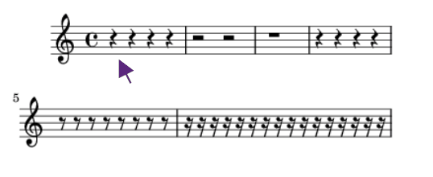

<section class="container-content">
    <div class="d-flex flex-column justify-content-around etapa1-texto">
        <div>
            <h5>Exercício 5</h5>
            <p>Observe o símbolo de pausa abaixo, quanto tempo de pausa o símbolo indica?</p>
        </div>
        <div>
            
        </div>
    </div>
    <div class="pt-4 etapa1-grid-notas d-flex flex-wrap justify-content-around align-items-center">
        <div class="etapa1-notas otrec" onclick="otrec(conteudo_etapa9.etapa9Conteudo45, 9, 42)" role="button">&nbsp;1 tempo&nbsp;</div>
        <div class="etapa1-notas odarre" onclick="odarre(conteudo_etapa9.etapa9Conteudo45, 9, 42)" role="button">2 tempos</div>
        <div class="etapa1-notas odarre" onclick="odarre(conteudo_etapa9.etapa9Conteudo45, 9, 42)" role="button">4 tempos</div>
        <div class="etapa1-notas odarre" onclick="odarre(conteudo_etapa9.etapa9Conteudo45, 9, 42)" role="button">&nbsp;<math class="math">
                <mfrac>
                    <msup>
                        <mi>1</mi>
                    </msup>
                    <mn>2</mn>
                </mfrac>
            </math> tempo&nbsp;</div>
        <div class="etapa1-notas odarre" onclick="odarre(conteudo_etapa9.etapa9Conteudo45, 9, 42)" role="button">&nbsp;<math class="math">
                <mfrac>
                    <msup>
                        <mi>1</mi>
                    </msup>
                    <mn>4</mn>
                </mfrac>
            </math> tempo&nbsp;</div>
    </div>
    <div class="mensagem" id="mensagem"></div>
</section>